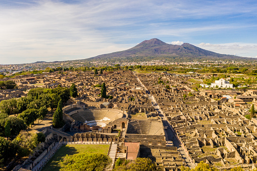
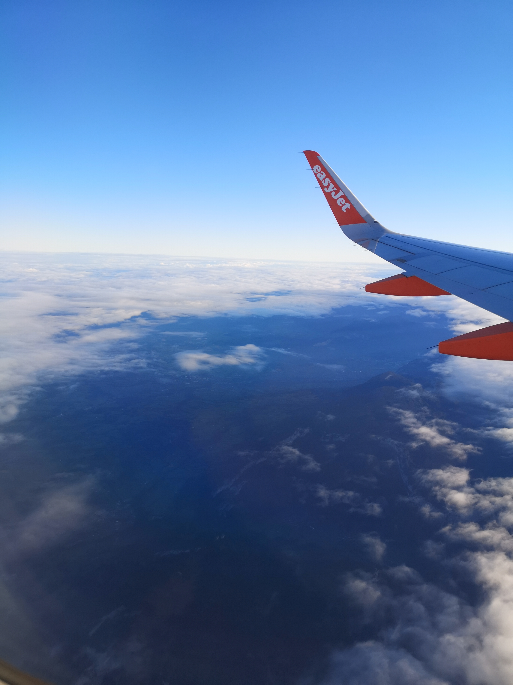

Horaire
- Overture de 9h à 17h du 01/11 au 31/03. Dernière entrée à 15h30
- Ouverture de 9h à 19h du 01/04 au 31/10. Dernière entrée à 17h30

A proximité
- Visite du site de Herculanum, enseveli au même moment que pompei.
- Parcourez les rues de la ville de Naples et dégustez une de leurs fameuses pizzas.
- Montez voir l'immense cratère du Vésuve.

Accès au site
- Arrivée par l'aéroport de Naples.
- Après avoir rejoint la ville de Naples par Bus ou taxi, prendre le train en gare de Napoli centrale et rejoindre la gare de Pompei ou la gare de Torre Annunziata Centrale.
- Accès également possible par bus.